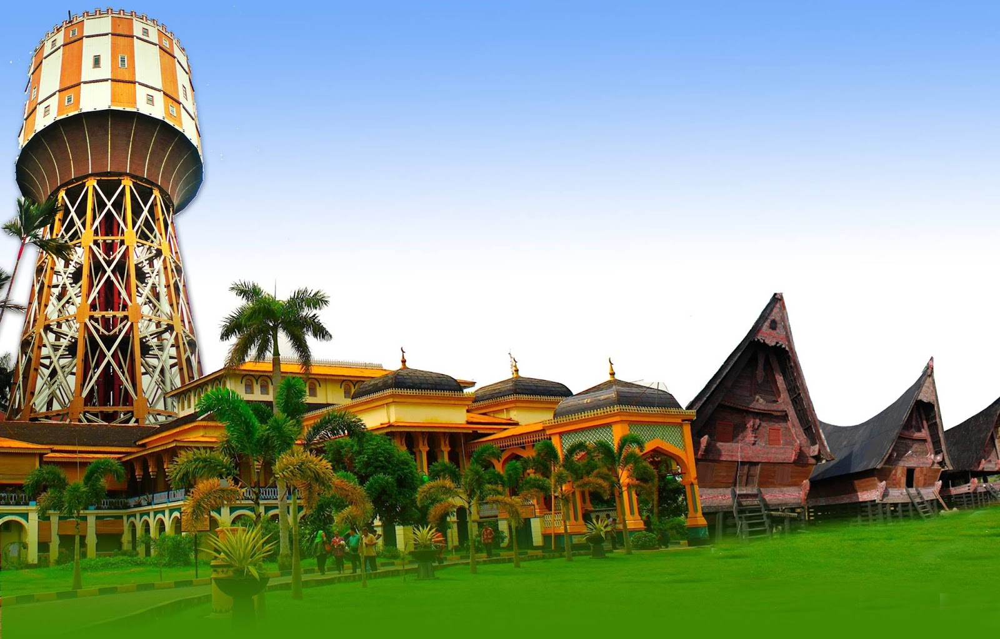

KOTA MEDAN
Ibukota Sumatera Utara yang Multikultural
Medan adalah kota terbesar ketiga di Indonesia setelah Jakarta dan Surabaya, serta merupakan ibukota Provinsi Sumatera Utara. Terletak di pesisir timur Pulau Sumatera, kota ini berkembang dari kota perdagangan kecil menjadi metropolis yang menjadi pusat perekonomian, pendidikan, dan budaya di bagian barat Indonesia.
"Medan adalah kota yang menawarkan pengalaman perjumpaan budaya yang unik. Di sini, Anda dapat menyaksikan harmonisasi budaya Melayu, Batak, Tionghoa, Tamil, Jawa, dan Minangkabau yang hidup berdampingan, menciptakan mozaik kultural yang kaya dan beragam."
Dengan populasi sekitar 2,2 juta jiwa, Medan memiliki karakter kosmopolitan dengan berbagai etnis yang hidup berdampingan. Keberagaman ini tercermin dalam arsitektur, kuliner, bahasa, dan tradisi yang dapat ditemui di berbagai sudut kota. Pengaruh kolonial Belanda masih dapat dilihat dari bangunan-bangunan bersejarah yang tersebar di pusat kota.
Sejarah Kota Medan
Abad ke-16
Sebelum berkembang menjadi kota, wilayah Medan merupakan bagian dari Kesultanan Deli. Kawasan ini awalnya berupa perkampungan kecil yang dihuni oleh suku Melayu dan Batak.
1860-an
Jacobus Nienhuys, seorang pengusaha Belanda, memulai perkebunan tembakau di wilayah ini. Kesuksesan perkebunan tembakau Deli menarik banyak perusahaan Eropa untuk membuka perkebunan di sekitar Medan.
1869
Medan resmi menjadi kota dan menjadi pusat administrasi pemerintahan kolonial Belanda di Sumatera Timur. Pembangunan infrastruktur seperti jalan, rel kereta api, dan pelabuhan mulai dikembangkan.
1915
Medan menjadi gemeente (kotamadya) dan mengalami perkembangan pesat sebagai pusat perdagangan dan perkebunan. Banyak bangunan kolonial dibangun pada era ini, seperti Kantor Pos, Balai Kota, dan Istana Maimun.
1945-1950
Setelah kemerdekaan Indonesia, Medan menjadi salah satu kota penting dalam perjuangan mempertahankan kemerdekaan. Pada tahun 1950, Medan secara resmi menjadi ibukota Provinsi Sumatera Utara.
Saat Ini
Medan berkembang menjadi pusat bisnis, pendidikan, dan budaya di Sumatera. Kota ini terus mengalami modernisasi dengan pembangunan mal, apartemen, universitas, dan infrastruktur kota lainnya.
Tempat Wisata Populer
Istana Maimun adalah istana Kesultanan Deli yang dibangun pada tahun 1888. Istana ini memiliki arsitektur unik yang menggabungkan gaya Melayu, Islam, Spanyol, India, dan Italia. Dengan 30 ruangan, istana ini menjadi salah satu bangunan bersejarah yang menarik untuk dikunjungi. Pengunjung dapat melihat koleksi pusaka keraton, foto-foto Sultan Deli dari berbagai generasi, dan menyewa pakaian tradisional untuk berfoto di dalam istana.
Dibangun pada tahun 1906 dan selesai pada tahun 1909, Masjid Raya Al-Mashun merupakan masjid megah dengan arsitektur khas Timur Tengah, Spanyol, dan India. Masjid ini memiliki kubah berwarna hitam dan empat menara di setiap sudutnya. Interior masjid dihiasi dengan ornamen dan kaligrafi indah. Lokasinya berdekatan dengan Istana Maimun membuat kedua tempat ini sering dikunjungi dalam satu rute perjalanan.
Rumah bersejarah yang dibangun pada tahun 1895 oleh Tjong A Fie, seorang pengusaha Tionghoa yang berpengaruh di Medan pada masa kolonial. Bangunan dua lantai ini menggabungkan arsitektur Tionghoa dan Eropa dengan interior yang mewah. Di dalam mansion terdapat furnitur antik, foto-foto keluarga, dan artefak sejarah yang memberikan gambaran kehidupan elit pada masa kolonial. Mansion ini menjadi saksi bisu sejarah multikulturalisme Kota Medan.
Kawasan bersejarah di pusat Kota Medan yang memiliki deretan bangunan kolonial Belanda yang masih terawat. Jalan Kesawan (sekarang Jalan Ahmad Yani) merupakan kawasan bisnis tertua di Medan. Di area ini juga terdapat Tip Top Restaurant, restoran tertua di Medan yang berdiri sejak 1934. Pada malam hari, area ini menjadi lokasi Pasar Malam Kesawan yang menawarkan berbagai kuliner khas Medan.
Pusat Kuliner
Medan dikenal sebagai surga kuliner dengan beragam hidangan yang mencerminkan keberagaman etnisnya. Beberapa tempat kuliner terkenal di Medan antara lain Jalan Selat Panjang untuk kuliner Tionghoa, Pasar Petisah untuk jajanan tradisional, Merdeka Walk untuk aneka kuliner modern, dan Kesawan untuk makanan heritage. Medan juga terkenal dengan kopi khasnya, seperti kopi Sidikalang dan kopi Mandheling yang dapat dinikmati di kedai-kedai kopi tradisional maupun modern.
Kehidupan Modern
Sebagai kota metropolitan, Medan menawarkan berbagai fasilitas modern seperti pusat perbelanjaan (Sun Plaza, Cambridge City Square, Center Point), hotel berbintang, restoran, kafe, dan tempat hiburan. Kota ini juga memiliki beberapa universitas terkemuka seperti Universitas Sumatera Utara dan Universitas Negeri Medan. Meski mengalami modernisasi, Medan tetap mempertahankan karakter tradisionalnya melalui pasar-pasar tradisional dan kampung-kampung etnis yang masih eksis.
Transportasi
Medan dilayani oleh Bandara Internasional Kualanamu yang berjarak sekitar 39 km dari pusat kota. Untuk transportasi dalam kota, tersedia angkutan umum seperti bus Trans Medan, angkot, dan taksi. Becak mesin (becak bermotor) menjadi salah satu ikon transportasi khas Medan yang tidak ditemui di kota-kota besar lainnya di Indonesia. Kota ini juga menjadi titik awal untuk menjelajahi destinasi wisata lain di Sumatera Utara seperti Danau Toba, Berastagi, dan Tangkahan.